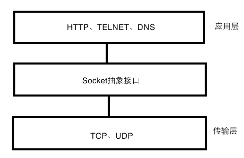

网络技术学习笔记2018-03-20TCP/IP协议端口端口号的范围从0到65535。 TCP连接在TCP/IP协议栈中，源端口号和目的端口号分别与源IP地址和目的IP地址组成套接字（socket），唯一的确定一条TCP连接。 网络层次： UDPuser datagram protocol，用户数据报协议，是一种无连接的传输层协议。 socket网络上的两个程序通过一个双向的通信连接实现数据的交换，这个连接的一端称为一个socket。socket是对TCP协议的封装。